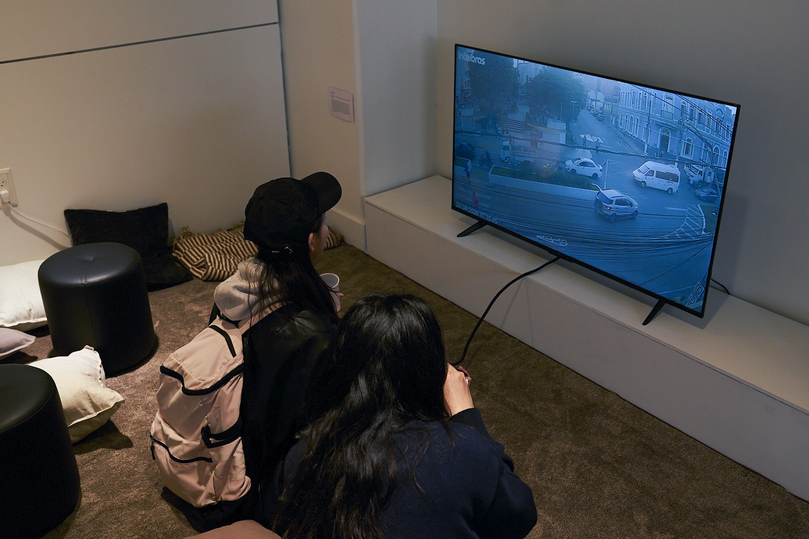
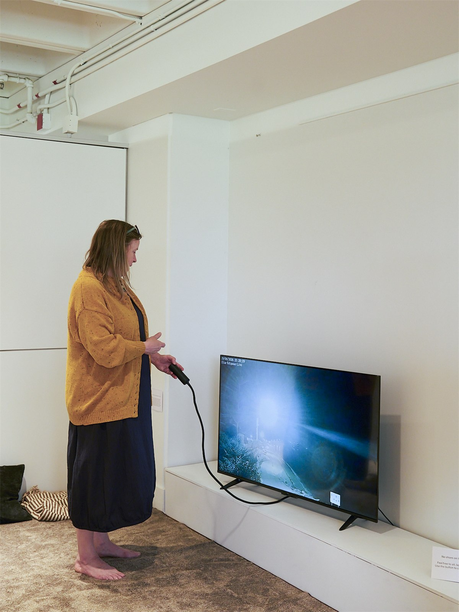
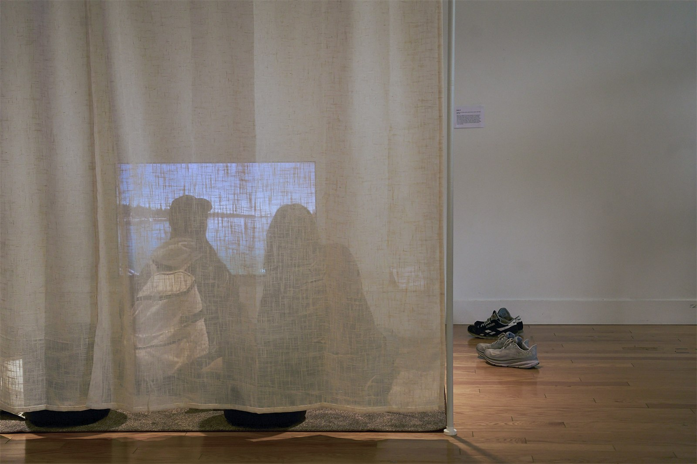
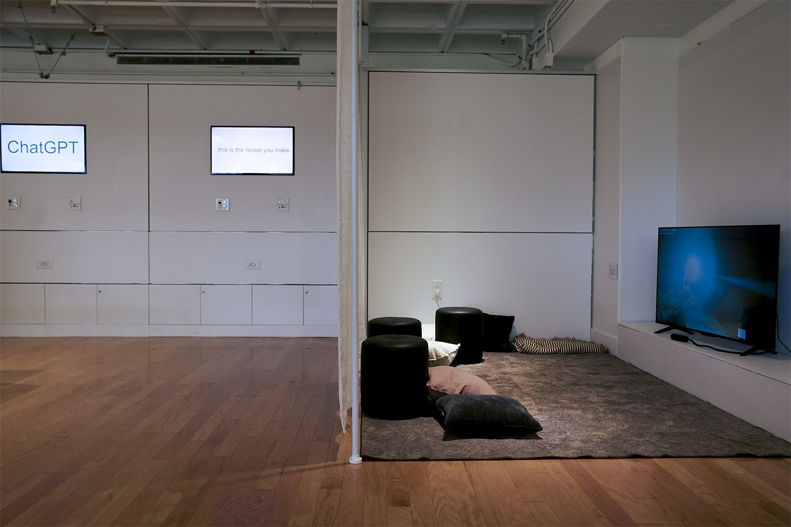

Reality TV
Reality TV is an interactive video installation that features a rotating broadcast of 24/7 nature streams on the website Twitch.TV, all of which have zero concurrent viewers. The broadcasts’ camera feeds are often unmanned and have been running for months, raising questions of who is streaming, from where, and for whom.
I created this artwork as part of my undergraduate Art & Design thesis, which was concerned with questions of internet content, digital infrastructures, and online existence.
I created this artwork as part of my undergraduate Art & Design thesis, which was concerned with questions of internet content, digital infrastructures, and online existence.
[1] Visitors watching the installation.

[2] The installation in the gallery: a viewer pressing the remote control button and the curtained "living room" area viewed from outside.


